Fun with Filters
and Frequencies
Finding edges, sharpening photographs, making hybrid images, and blending at multiple scales.
- Input
- Digital photographs
- Method
- Spatial filtering
- Output
- Edges, hybrids, blends
Overview
I started with a very literal question: what happens when a tiny filter is moved over every pixel? By the end I was using those same filters to pull out edges, make a photo look sharper, and combine two scenes. The most surprising part was how often a result that looked wrong made more sense once I looked at which frequencies were being kept.
Convolution from Scratch
I wrote convolution twice using NumPy, first with four nested loops and then with two. Both versions flip the kernel and add zero padding so the output stays the same size as the input.
Four loops, two loops, and SciPy
In the first version, the inner two loops multiply each pixel in a neighborhood by its flipped kernel weight. The second version hands that neighborhood multiplication to NumPy. The four-loop version was slowest, the two-loop version faster, and SciPy fastest. All three matched for the box filter.
I kept zero padding in the SciPy comparison too. Otherwise, a different boundary rule could make two correct implementations disagree at the image edges. The darker outline in the blurred photos is the visible cost of treating pixels beyond the frame as zero.
Here, the padded image supplies a neighborhood around each output pixel, and the flipped kernel supplies its weights, shown by the loops in the code below...
Four-loop version
def convolution_four_loops(image, kernel):
height, width = image.shape
result = np.zeros((height, width))
kheight, kwidth = kernel.shape
padded = np.pad(image, ((kheight // 2, kheight // 2), (kwidth // 2, kwidth // 2)))
flipped = np.flip(kernel)
for y in range(height):
for x in range(width):
tot = 0
for ky in range(kheight):
for kx in range(kwidth):
pix = padded[y + ky, x + kx]
weight = flipped[ky, kx]
tot += weight * pix
result[y, x] = tot
return resultTwo-loop version
def convolution_two_loops(image, kernel):
height, width = image.shape
kheight, kwidth = kernel.shape
padded = np.pad(image, ((kheight // 2, kheight // 2), (kwidth // 2, kwidth // 2)))
flipped = np.flip(kernel)
result = np.zeros((height, width))
for y in range(height):
for x in range(width):
area = padded[y:y + kheight, x:x + kwidth]
result[y, x] = np.sum(area * flipped)
return result
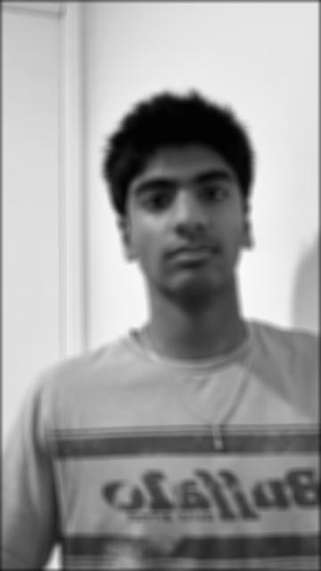

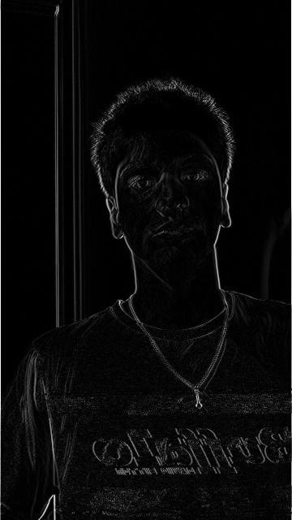
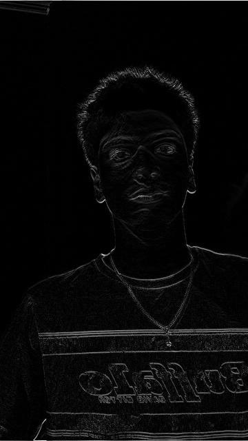
Edges and Gaussian Smoothing
The cameraman image is a useful test because the subject has strong edges, but the grass has lots of noise. I used and to measure horizontal and vertical brightness changes, then combined them before deciding which changes were large enough to count as edges.
Finite differences
The first row moves from the original photo to its two directional derivatives and then to one gradient-magnitude image. Each gradient pixel combines both directions, so an edge does not disappear just because it is tilted.

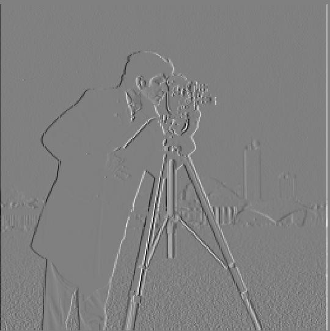
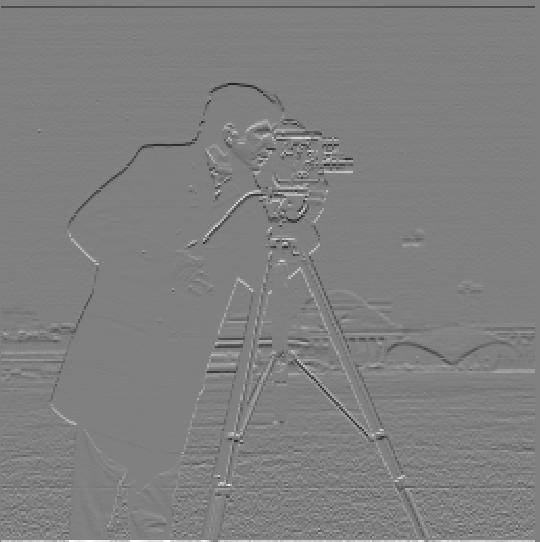
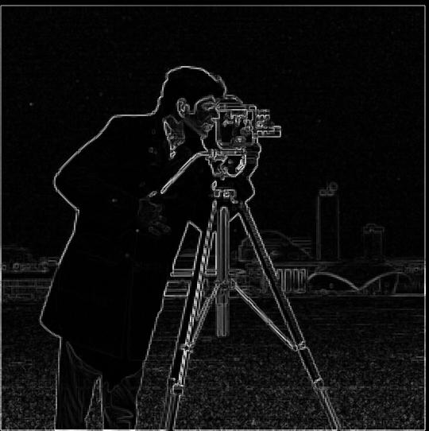
Turning the gradient into edges
The next three images all start from that same gradient. A pixel is white if its magnitude is above the threshold and black otherwise. At 0.10, the grass and background get busy. At 0.50, parts of the photographer and tripod disappear. I kept 0.20 because it holds onto the main outlines without as much noise.
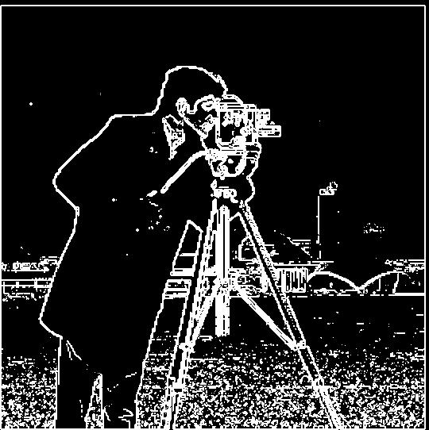
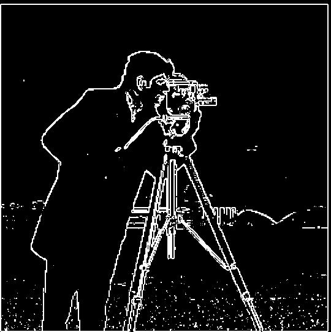
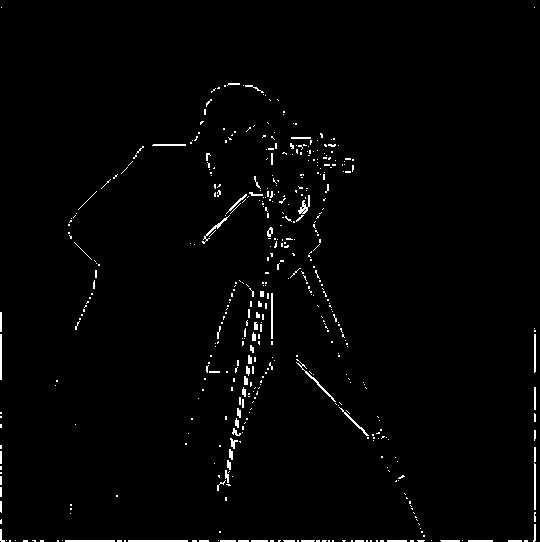
Derivative of Gaussian
The unsmoothed edge map still picks up a lot of texture. I made an Gaussian from a 1D kernel and an outer product. Blurring before differentiating suppresses smaller changes, but it can also thicken an edge. I then combined the Gaussian with each derivative filter, so the blur and derivative could be applied with one convolution. I verified that the two approaches agree in the interior, where their boundary handling does not interfere.
The filters
The two DoG images below are filters, not processed cameraman photos. One responds to horizontal changes, the other to vertical ones.
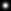
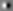
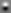
Applying them to cameraman
Here the left image is only blurred. The middle image blurs first and then takes derivatives; the right image uses the combined DoG filters directly. Their gradient magnitudes look nearly the same.

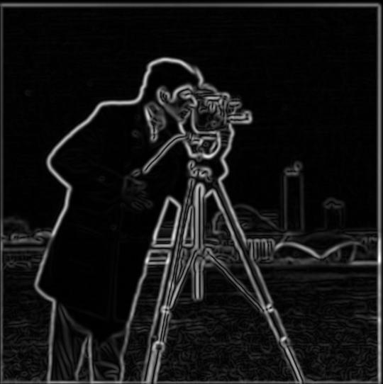
The resulting edge maps
The left image is the original finite-difference result at 0.20. The middle and right images use a 0.10 threshold after smoothing. They lose much of the scattered background noise, which is the improvement I wanted to see.
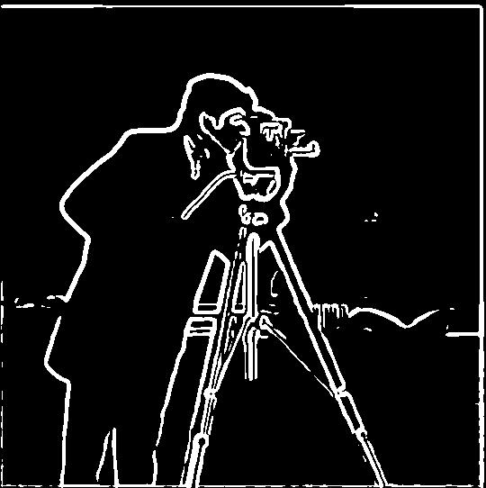

Image Sharpening
Unsharp masking increases edge contrast by adding back the difference between an image and its Gaussian-blurred version. I applied the same blur to each color channel, then scaled that high-frequency difference before adding it to the original. Shown alone, the difference image is mostly neutral gray with bright and dark traces around edges because its values are centered near zero.
The term in parentheses is the high-frequency part. I also made a single unsharp-mask kernel, , where the impulse kernel leaves the input unchanged. One convolution with that kernel matched the blur-subtract-add calculation before saving.
Taj Mahal

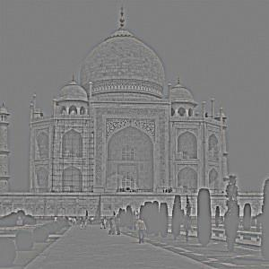
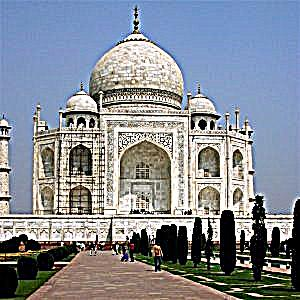
As I increased , the building edges became more noticeable, but the strongest version felt a little harsh. I liked the middle result better than simply turning the effect all the way up.
Another blurry image
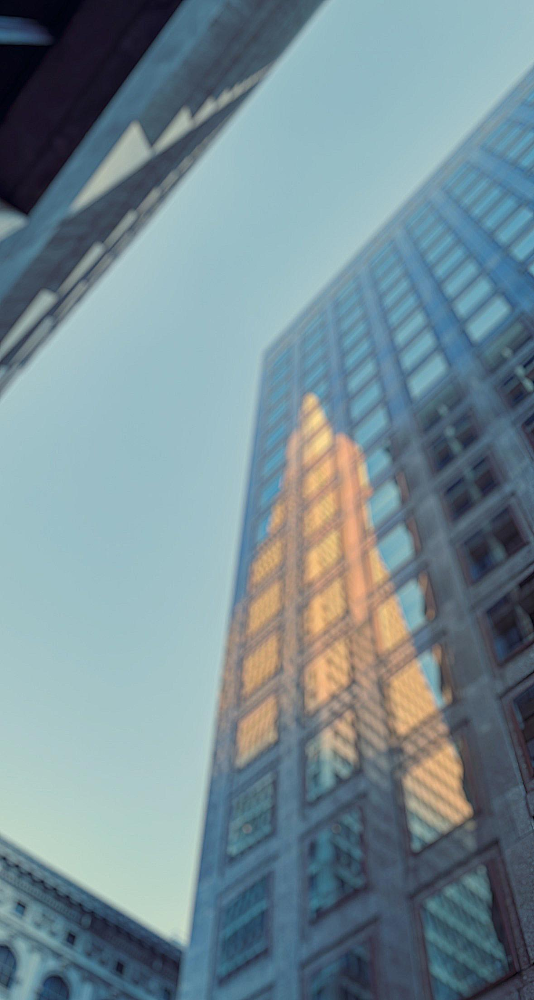
One curious effect in this comparison: the stronger building edges make the three frames appear slightly misaligned. They are the same original image in the same position; only the sharpening amount changes.
Blurred and sharpened again
I tried the reverse experiment on my selfie: start sharp, blur it, and then sharpen the blurred copy. The last image has stronger edges than the middle one, but clearly isn't able to recover all the lost detail as the blur isn't a lossless operation. My hair and the shirt lettering are good examples of this.
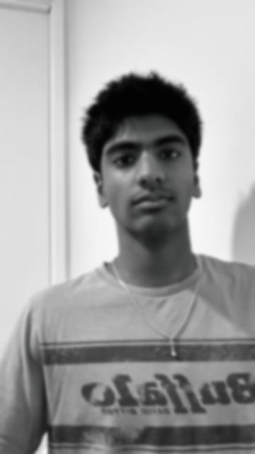
Hybrid Images
A hybrid combines the low spatial frequencies of one image with the high spatial frequencies of another. Close up, the fine detail is easy to resolve. From farther away, that detail becomes less visible and the low-frequency structure takes over. I aligned corresponding points first so the two interpretations occupy roughly the same position and scale.
The first term keeps the low frequencies from one aligned image; the subtraction keeps the high frequencies from the other. I used grayscale here and reduced the aligned images to at most 500 pixels on their longest side. Derek and Nutmeg used low-pass and high-pass . My two other pairs used for both filters, mostly deduced by trial and error.
Derek and Nutmeg
Nutmeg started at an angle, so I rotated the cat photo to bring the eyes closer to Derek's eye line. That helped the two faces share the same space. The displayed hybrid is cropped at the top because the rotation left a black strip and a diagonal boundary there.


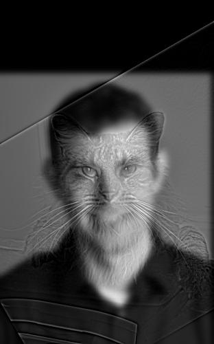
Mountain and wolf
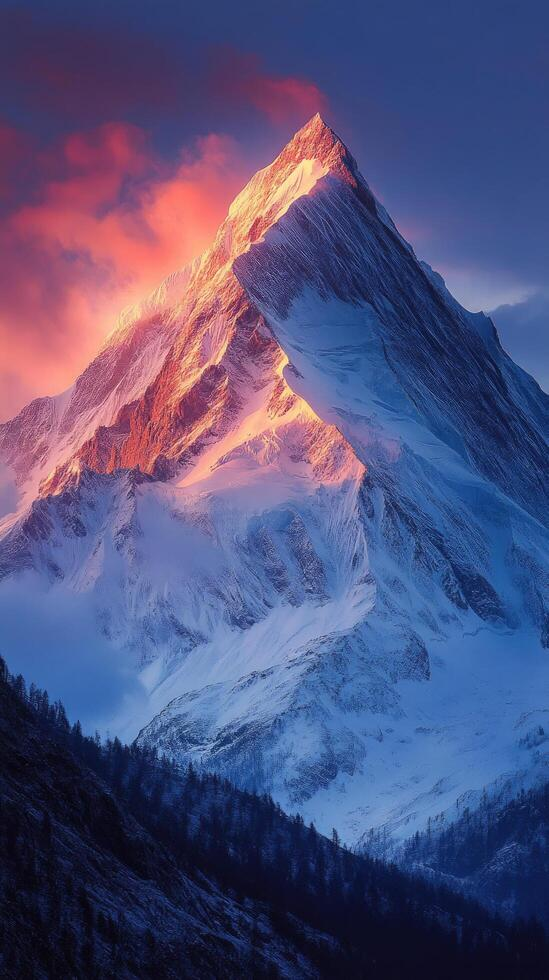
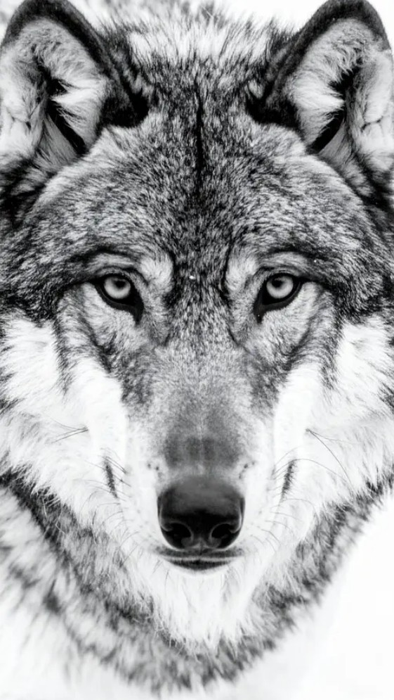
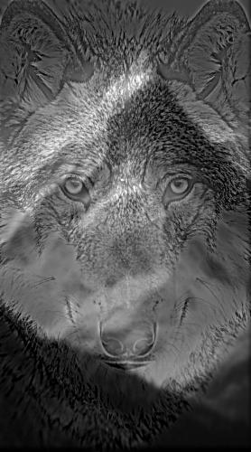
At close range, the wolf's facial detail dominates. At a reduced display size, those high-frequency features become less distinct and the mountain's broad outline becomes clearer.
Moon and grim reaper
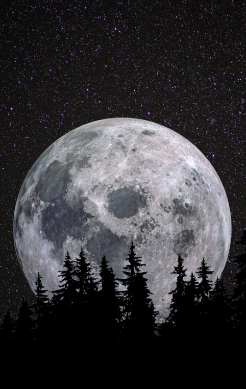
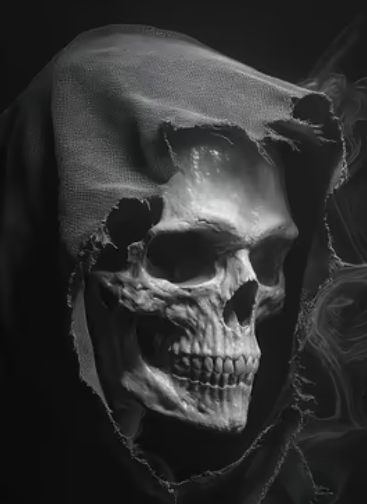
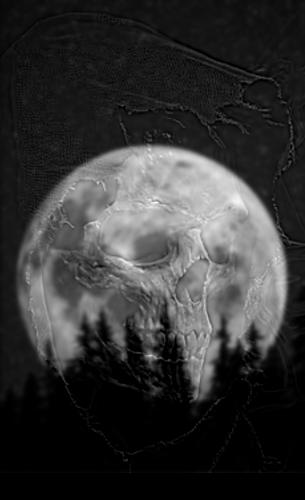
This is the pair I used for the full process below. The first two images show the aligned, same-sized inputs; the next two show the low- and high-frequency components that were actually added.
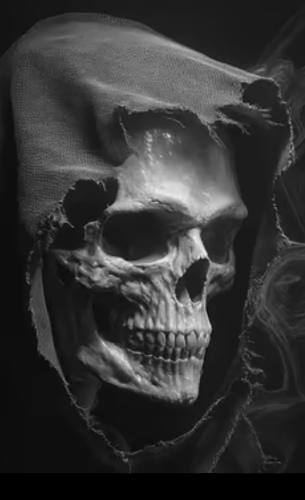
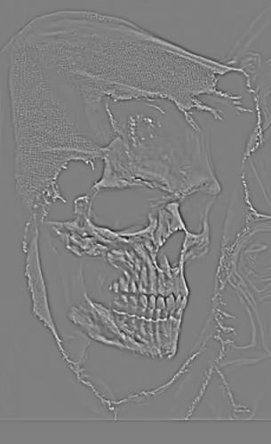
Fourier analysis
I chose the Gaussian cutoffs by comparing hybrids at close range and at a smaller display size, not by reading a cutoff directly from the Fourier plots. For this pair, a larger low-pass standard deviation erased too much of the moon's outline, so I kept for both filters. The plots then serve as a check: in the centered log-magnitude spectrum, the blurred moon concentrates energy near the center, while the grim reaper's high-pass result suppresses the center and retains frequencies farther out.
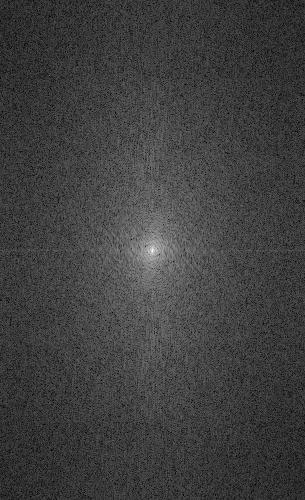
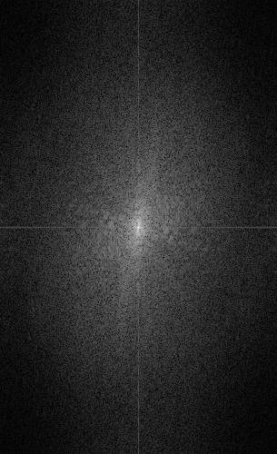
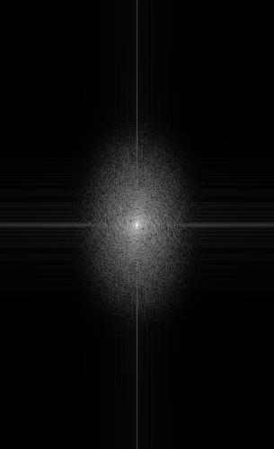
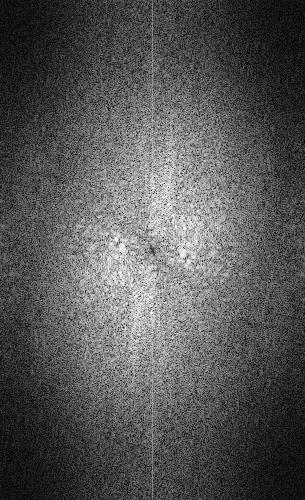
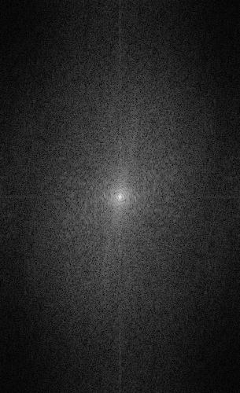
Gaussian and Laplacian Stacks
The original image is level 0 of the Gaussian stack. Each later level convolves the previous image with a Gaussian of increasing standard deviation, but never downsamples it, so all levels keep the same dimensions. Subtracting adjacent Gaussian levels gives the corresponding Laplacian band: the detail present at one level but removed by the next blur.
The last Laplacian level is the final, heavily blurred Gaussian image. The other levels have positive and negative values, so I shifted them toward middle gray only for display. I kept the signed values for the actual blend.
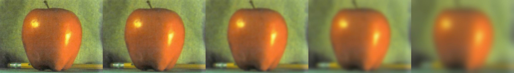
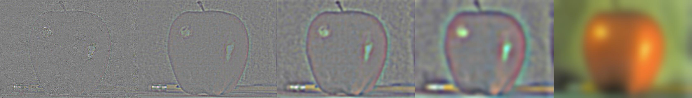
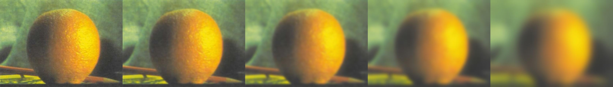
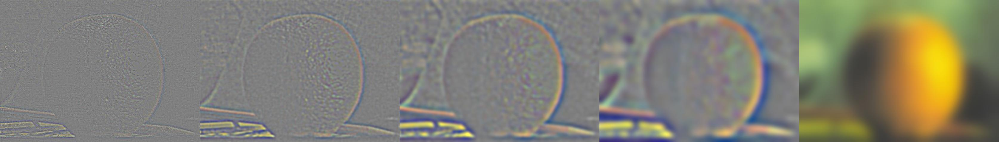
Oraple and the 12-panel breakdown
I started with a sharp left-right mask: apple on one side, orange on the other. Giving that mask its own Gaussian stack changes the seam with the frequency level instead of using one hard boundary everywhere. The first three rows show the weighted pieces at levels 0, 2, and 4. The last row adds up the apple pieces, adds up the orange pieces, and finally combines them.
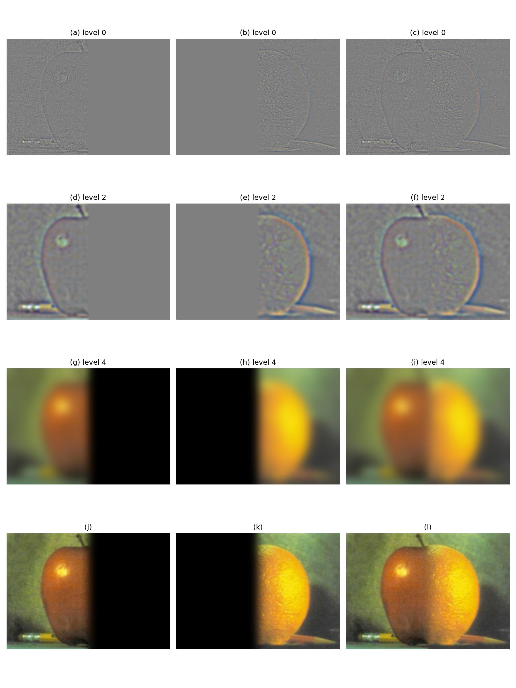
Multiresolution Blending
I blended the Laplacian bands separately rather than joining the original images with a single sharp seam. At each of the five levels, a Gaussian-blurred mask weights the corresponding band from each source. I summed those weighted bands and repeated the operation for each color channel. The direct-cut versions provide a useful comparison for judging the seam.
In the equation, is a Laplacian level and is the Gaussian-blurred mask at that level. The code multiplies the first image's band by , the second by , and sums the five blended bands. Those complementary weights preserve contributions from both images while giving coarser bands a wider transition.
The oraple
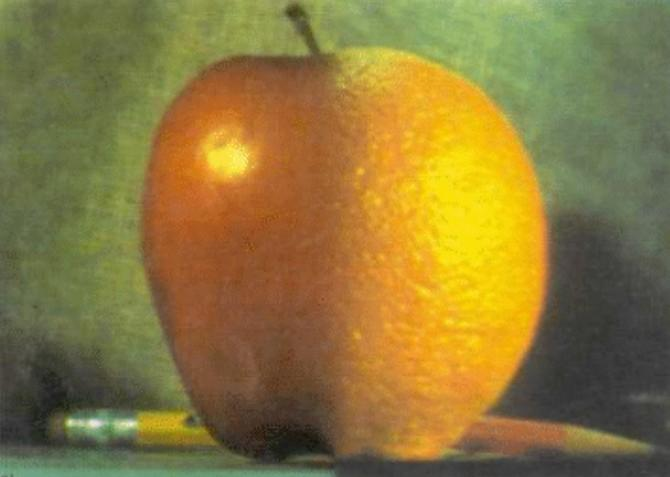
Mountain and wolf
I started this pair with a vertical divide, then softened the mask before making its stack. That widened the transition in the middle without blurring the entire wolf or mountain. The direct cut makes the boundary explicit; in the multiresolution result, the transition is distributed across the frequency bands.
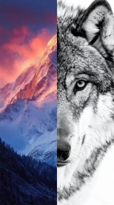
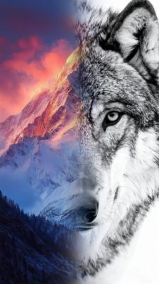
Moon and grim reaper
A straight seam made less sense for a face, so I drew an oval mask around the grim reaper. I also cropped the moon image to a matching aspect ratio before resizing it; otherwise the moon looked squashed.
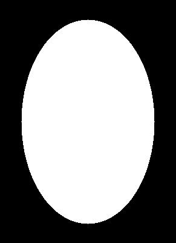
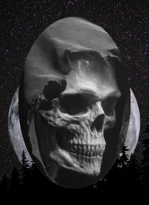
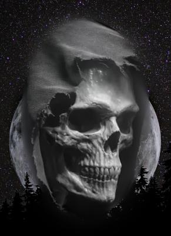
The two masked images below show which parts came from each source. The level-by-level figure underneath shows how those parts were combined, not just the finished composite.
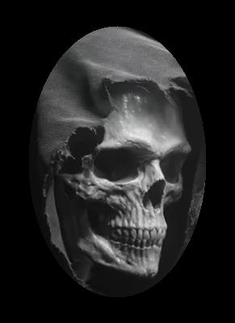
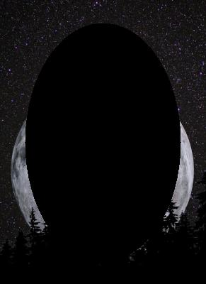
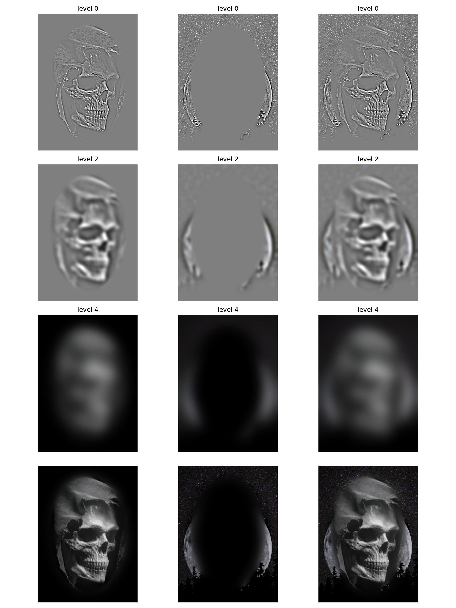
What I Learned
The blur-then-sharpen selfie made the limits of frequency processing concrete for me. The unsharp mask increases the contrast of high-frequency detail that survives in an image, but it cannot reconstruct detail removed by the earlier blur. The Taj looked crisper as I increased the sharpening amount; the selfie never returned to its original state. Stronger edges and recovered information are not the same thing.
That distinction also changed how I understood the blends. The Laplacian stack separates the image into signed frequency bands, but the blend depends just as much on the Gaussian stack of the mask. In my moon and grim reaper example, applying the same hard oval at every level would leave an obvious boundary. Weighting each band with its own smoothed mask lets the broad color transition extend farther than the fine detail. Comparing the direct cut with the final blend made that scale-dependent seam the most useful idea I took from this project.